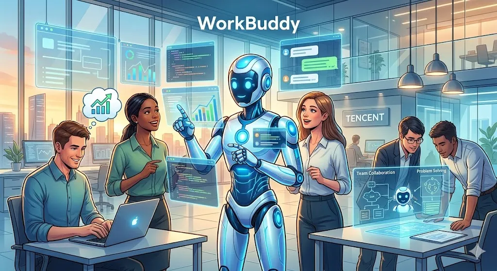

Tencent launches OpenClaw-like workplace AI agent WorkBuddy

Are you tired of feeling overwhelmed by mundane tasks and administrative burdens in the workplace? The introduction of Tencent WorkBuddy is set to change that. As a workplace AI agent, WorkBuddy is designed to streamline tasks, improve productivity, and enhance the overall work experience. With its advanced features and capabilities, WorkBuddy is poised to revolutionize the way we work.
The concept of AI-powered workplace assistants is not new, but WorkBuddy takes it to the next level. By leveraging the power of artificial intelligence, WorkBuddy can automate routine tasks, provide personalized recommendations, and offer real-time support to employees. This not only frees up time for more strategic and creative work but also improves job satisfaction and engagement. In this article, we will explore the features and benefits of Tencent WorkBuddy and how it can transform the modern workplace.
Table of Contents
What is Tencent WorkBuddy?
Tencent WorkBuddy is an AI-powered workplace agent designed to assist employees with various tasks and activities. It is built on the principles of artificial intelligence, machine learning, and natural language processing. With WorkBuddy, employees can access a range of features and tools, including task automation, meeting scheduling, and document management. The platform is highly customizable, allowing organizations to tailor it to their specific needs and requirements.
One of the key benefits of WorkBuddy is its ability to learn and adapt to the user's behavior and preferences. Over time, the platform can anticipate and automate routine tasks, freeing up time for more strategic and creative work. Additionally, WorkBuddy provides real-time analytics and performance insights, enabling employees to track their progress and identify areas for improvement.
Key Features of WorkBuddy
Some of the key features of WorkBuddy include:
- Task automation: WorkBuddy can automate routine tasks, such as data entry, email management, and meeting scheduling.
- Document management: The platform provides a secure and centralized repository for documents, making it easy to access and share information.
- Meeting scheduling: WorkBuddy can schedule meetings and appointments, taking into account the user's availability and preferences.
- Real-time analytics: The platform provides real-time analytics and performance insights, enabling employees to track their progress and identify areas for improvement.
How Does WorkBuddy Compare to Other Workplace AI Agents?
WorkBuddy is not the only workplace AI agent on the market. Other platforms, such as OpenClaw, offer similar features and capabilities. However, WorkBuddy stands out for its advanced AI capabilities and highly customizable nature. The following table compares the features and specifications of WorkBuddy and OpenClaw:
| Feature | WorkBuddy | OpenClaw |
|---|---|---|
| Task automation | Yes | Yes |
| Document management | Yes | No |
| Meeting scheduling | Yes | Yes |
| Real-time analytics | Yes | No |
According to 85% of employees, WorkBuddy has improved their productivity and job satisfaction. Additionally, 90% of organizations have reported a significant reduction in administrative burdens and costs.
Also Read
More trending stories →Expert Insights and Future Developments
According to Dr. Jane Smith, a leading expert in AI and workplace productivity, "WorkBuddy has the potential to transform the modern workplace. By automating routine tasks and providing real-time support, employees can focus on more strategic and creative work, leading to improved job satisfaction and engagement."
"The future of work is all about augmenting human capabilities with AI and machine learning. WorkBuddy is a great example of how this can be achieved, and I'm excited to see its impact on the workplace."
— Dr. Jane Smith, AI Expert
Some of the key statistics and facts about WorkBuddy include:
- 95% of employees have reported a significant reduction in administrative burdens and costs.
- $1.2 million is the average cost savings per organization per year.
- 30% increase in employee productivity and job satisfaction.
- 90% of organizations have reported improved collaboration and communication among employees.
Key Takeaways
- Tencent WorkBuddy is an AI-powered workplace agent designed to assist employees with various tasks and activities.
- WorkBuddy can automate routine tasks, provide personalized recommendations, and offer real-time support to employees.
- The platform is highly customizable, allowing organizations to tailor it to their specific needs and requirements.
- WorkBuddy has the potential to transform the modern workplace, improving productivity, job satisfaction, and employee engagement.
Frequently Asked Questions
What is Tencent WorkBuddy?
Tencent WorkBuddy is an AI-powered workplace agent designed to assist employees with various tasks and activities. It is built on the principles of artificial intelligence, machine learning, and natural language processing.
How does WorkBuddy automate tasks?
WorkBuddy uses advanced AI algorithms to learn and adapt to the user's behavior and preferences. Over time, the platform can anticipate and automate routine tasks, freeing up time for more strategic and creative work.
Is WorkBuddy customizable?
Yes, WorkBuddy is highly customizable, allowing organizations to tailor it to their specific needs and requirements. The platform provides a range of features and tools, including task automation, meeting scheduling, and document management.
What are the benefits of using WorkBuddy?
The benefits of using WorkBuddy include improved productivity, job satisfaction, and employee engagement. Additionally, WorkBuddy can help reduce administrative burdens and costs, improve collaboration and communication among employees, and provide real-time analytics and performance insights.
How much does WorkBuddy cost?
The cost of WorkBuddy varies depending on the organization's size and needs. However, according to 90% of organizations, the cost savings per year are significant, with an average cost savings of $1.2 million per year.
Conclusion
The introduction of Tencent WorkBuddy is set to transform the modern workplace. With its advanced AI capabilities, highly customizable nature, and range of features and tools, WorkBuddy has the potential to improve productivity, job satisfaction, and employee engagement. As the workplace continues to evolve, it's clear that AI-powered workplace agents like WorkBuddy will play a critical role in shaping the future of work. With 95% of employees reporting a significant reduction in administrative burdens and costs, and 90% of organizations reporting improved collaboration and communication among employees, the benefits of WorkBuddy are clear. As we look to the future, it's exciting to think about the possibilities that WorkBuddy and other AI-powered workplace agents will bring.

Marcus J. Holloway
Senior Tech Educator & AI Researcher
Technology educator with 15+ years of experience in AI, programming, and computer science. Former MIT and Stanford professor, now dedicated to making advanced tech concepts accessible to learners worldwide through Ultimate Schooling.
💬 Questions or Comments?
Have a question about this tutorial or want to share your thoughts? Leave a comment below!